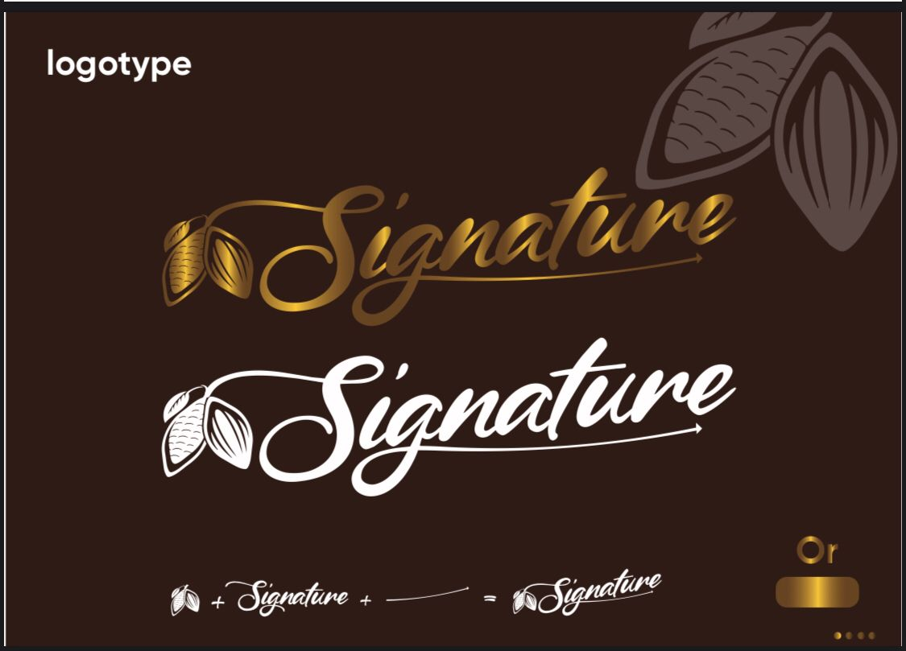

Moodboard

Le logo SIGNATURE incarne l’élégance et le savoir-faire d’un chocolat d’exception. Conçu pour refléter le raffinement et la qualité premium, il allie esthétisme et symbolisme pour transmettre une expérience gustative unique. Son design repose sur une typographie sophistiquée, inspirée des signatures manuscrites, évoquant l’authenticité, l’expertise et l’engagement dans la perfection. Une palette de couleurs luxueuses, mêlant des tons profonds de cacao, des touches dorées et des reflets satinés, souligne l’exclusivité et le prestige de la marque. Le cacao évoque des sensations de douceur, de richesse, de plaisir et de luxe. En l’utilisant visuellement sur le logo, la marque peut associer ces sensations à son produit. Cela peut stimuler l'appétit et attirer des consommateurs recherchant une expérience gustative de qualité. Un élément graphique en forme de flèche de progression est subtilement intégré au logo, symbolisant l’ascension vers l’excellence, la montée en intensité des saveurs et le parcours d’un chocolatier passionné. Cette dynamique visuelle illustre l’évolution et l’amélioration constante de la qualité, guidant le consommateur vers une expérience gustative inégalée. Avec son design harmonieux et ses finitions soignées, le logo SIGNATURE devient un véritable sceau de distinction, garantissant un chocolat raffiné, travaillé avec passion et destiné aux amateurs de haute chocolaterie.
